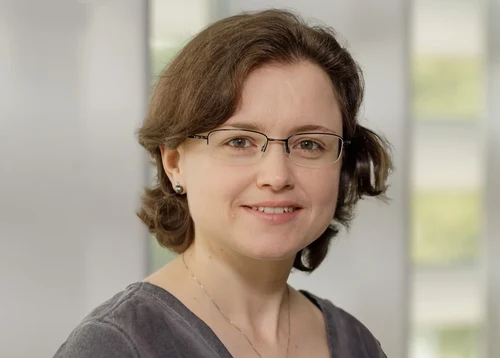
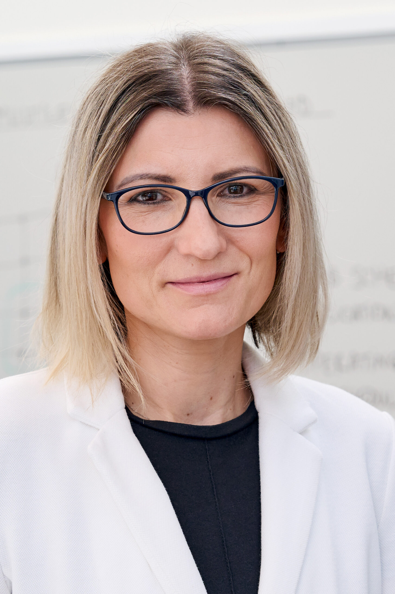
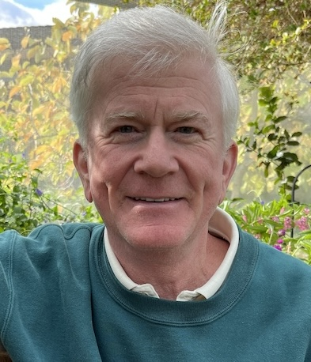
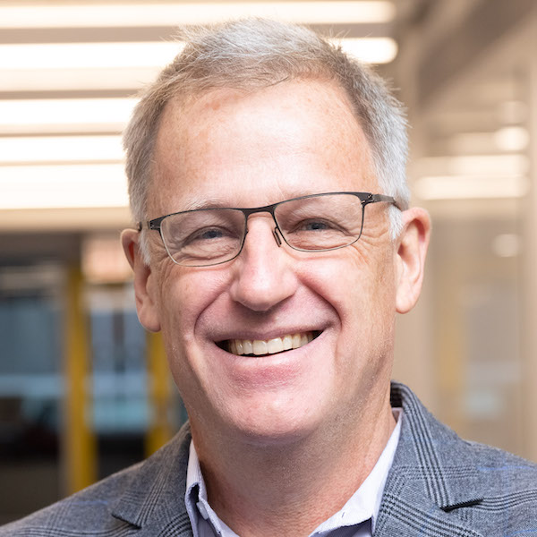
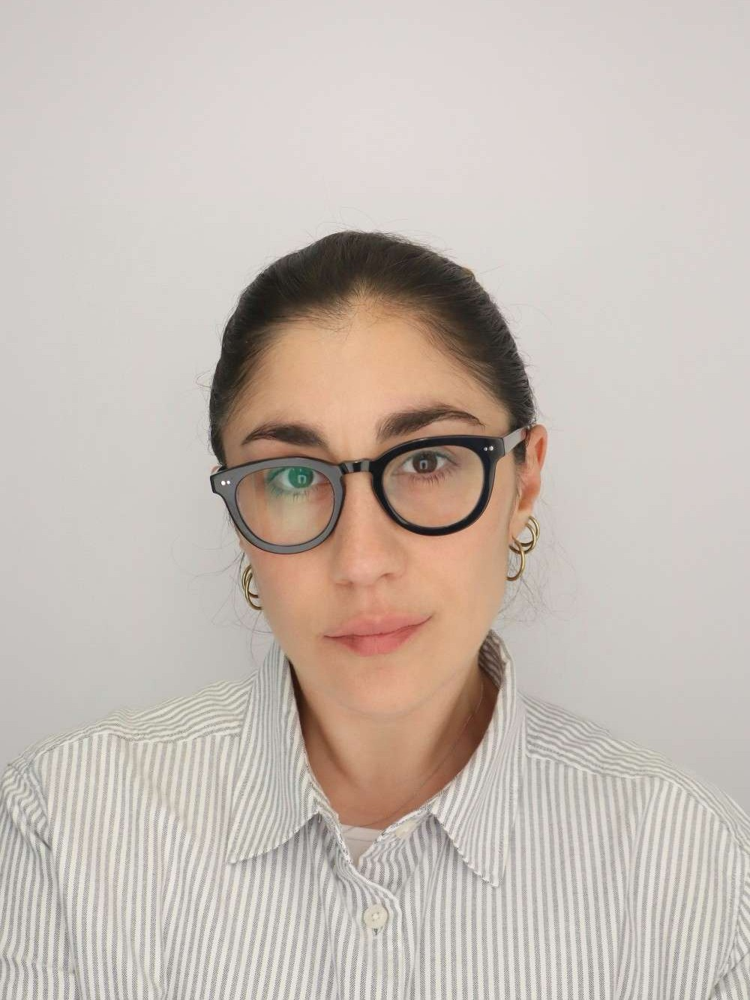
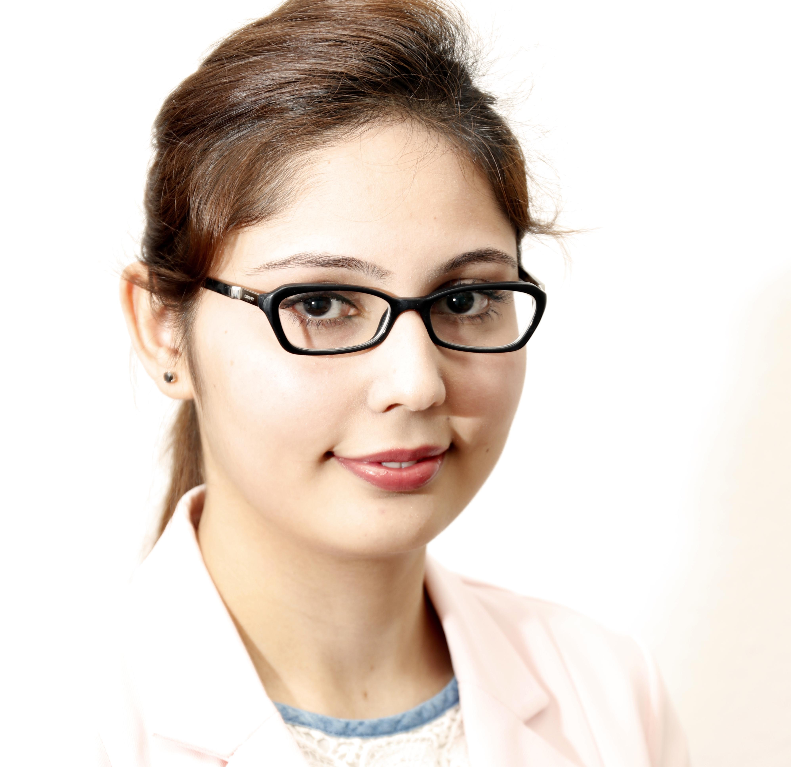
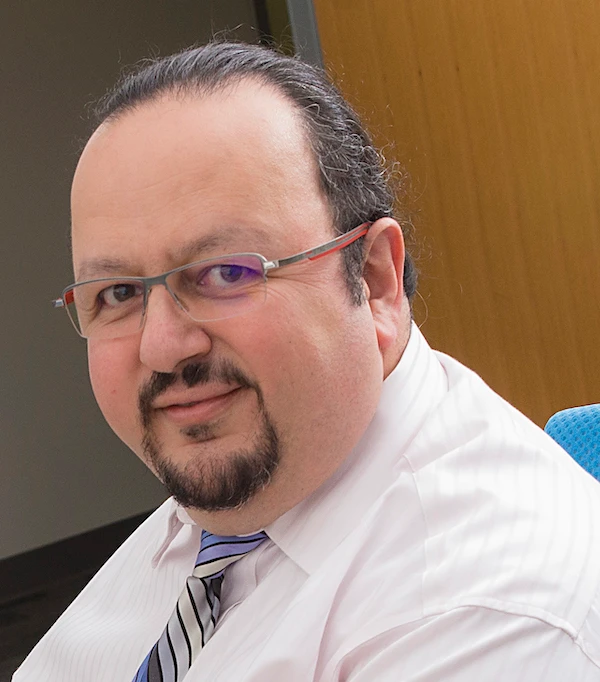
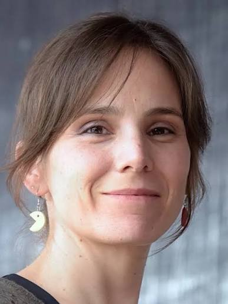
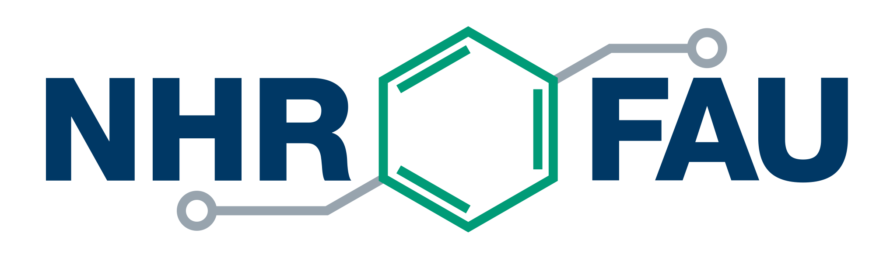
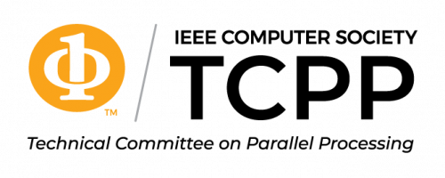

{kind=link}
Students & Early Career
0–5 yearsUndergraduates, graduates, and technical staff
Mentorship
Technical skills
Funding guidance
1st International Workshop on
Rising Innovators in Sustainable Exacomputing
November 15, 2026, 9:00 a.m. -- 12:30 p.m., Room W181c, Chicago, Illinois, USA
In conjunction with IEEE/ACM SC26:
The International Conference for High Performance Computing, Networking, Storage and Analysis
RISE 2026 aims to advance scientific exchange, showcase emerging research, and foster innovation, collaboration, and career growth. This technical workshop connects early-career HPC and AI innovators with established technical leaders, while promoting participation, leadership, and visibility in a structured, research-focused, interactive environment. It intentionally balances two complementary goals: technical excellence and professional growth across the broader HPC/AI ecosystem.
RISE 2026 is built around two equally important outcomes:
Research-focused technical exchange and collaborative contributions including the construction of a Pathways in Computing timeline with attendee participation.
Networking, mentoring, and career development discussions across technical areas, career stages, and backgrounds.
RISE welcomes contributions across hardware and system architectures, software environments, algorithmic performance, applications, machine learning, quantum computing, cloud computing, energy efficiency, sustainability, and the broader HPC/AI ecosystem. The workshop features:
RISE brings together innovators across the HPC and AI ecosystem at four career stages:
Undergraduates, graduates, and technical staff
Postdocs, RSEs, and applied scientists
Established engineers and institutional leaders
Educators, administrators, and workforce strategists
Lawrence Livermore National Laboratory
The delivery of the nation’s first generation of exascale supercomputers was one of the largest and most consequential collaborative efforts in the history of high-performance computing, spanning national laboratories, universities, and industry partners across the country. Lori Diachin helped lead this effort as Deputy Director and then Director of the U.S. Department of Energy's Exascale Computing Project (ECP) from 2018 through 2024. In this keynote, she will reflect on the technical, organizational, and human leadership lessons drawn from that journey: what it takes to align a multi-institutional team around a shared mission, how to sustain momentum through a decade-long research and engineering effort, and why mentorship and inclusive leadership are essential to building the next generation of computing talent. Drawing on her career across national laboratories and DOE programs, she will offer practical guidance for early- and mid-career researchers navigating their own paths in HPC and AI, and a candid look at what national-scale collaboration in science really requires.
Lori Diachin was the Director of the U.S. Department of Energy's Exascale Computing Project (ECP), a role she took on in June 2023 after serving as the project's deputy director since 2018. She currently serves as Lawrence Livermore National Laboratory's Acting Associate Director for Computing, leading a workforce of approximately 1,400 staff across high-performance computing, mission-related computing sciences, and information technology. Diachin has over 30 years of experience in applied mathematics research, with expertise spanning mesh quality improvement, mesh component software, numerical methods, and parallel computing. Earlier in her career she directed LLNL's Center for Applied Scientific Computing for six years and served two years as Acting Information Technology Department Head, and before joining LLNL she was a computer scientist at Argonne National Laboratory and a member of the technical staff at Sandia National Laboratories. In 2025, she was named one of HPCwire's "35 Legends" of high-performance computing, an honor recognizing individuals whose influence has shaped the trajectory of supercomputing.
Career Pathways Across Academia, Labs, & Industry: A Global View



Four invited senior peers deliver lightning talks sharing their technical journeys, expertise development, career transitions, and leadership experiences. The fast-paced session offers opportunities for follow-up conversations and mentoring connections.

Arizona State University
VQ Research
USA

University of Chicago
Argonne National Lab
USA
TBA
TBA
Three invited women technical leaders present lightning talks highlighting innovative projects and research leadership.
Invited Lighting Talks: TBA
Seven invited rising innovators deliver lightning talks showcasing their research, technical ideas, projects, discoveries, or emerging directions in HPC and AI.
King Abdullah University of Science and Technology (KAUST), Saudi Arabia
Title: TBA

Giulia GuidiCornell University, USA
Title: Sparse by Nature, Parallel by Design: HPC for the Life Sciences
Welcome, workshop overview, and introduction to the RISE 2026 program.
Discover the expertise, research interests, and innovation landscape represented across the RISE community.
Refresh, connect, and explore the RISE research expertise MAP and EXHIBIT.
Career Pathways Across Academia, Labs, & Industry: A Global View
Meet the panelists →An interactive opportunity to connect and exchange ideas through elevator-pitch exercises and the RISE Research Expertise Map and Exhibit, helping participants identify shared research interests and career goals.




Erlangen National High Performance Computing Center (NHR@FAU) / NHR Women in HPC Chapter

IEEE Computer Society Technical Community on High-Performance Computing (TCHPC)
For questions, please contact the General Chair: Ayesha Afzal at ayesha.afzal@fau.de.